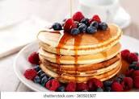

Pancakes

Description
These tres leches pancakes are a mouthwatering and easy way to combine your love for tres leches cake with light and fluffy pancakes. They're indulgent, but perfect for a special occasion, upscale breakfast, or brunch.
Ingredients
- 1 (15.25 oz) box French vanilla cake mix
- 1 1/4 cups almond milk
- 3 large eggs, lightly beaten
- 4 tablespoons vegetable oil, divided
- 1/2 cup whipped cream, or as needed (optional)
- 1/4 teaspoon ground cinnamon, or as needed (optional)